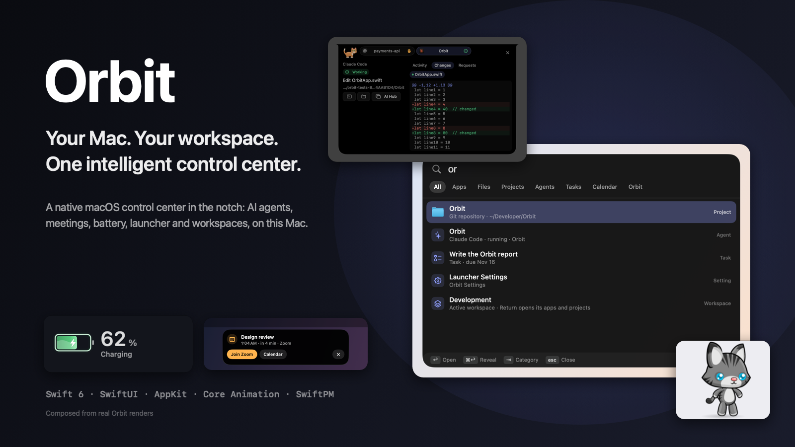
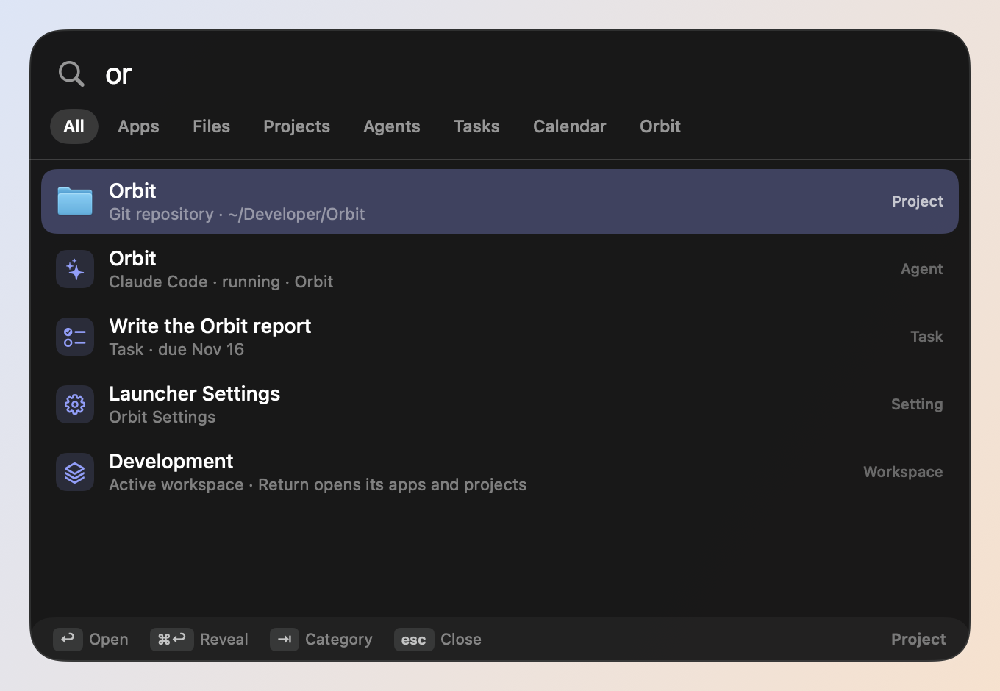
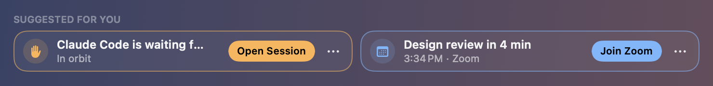
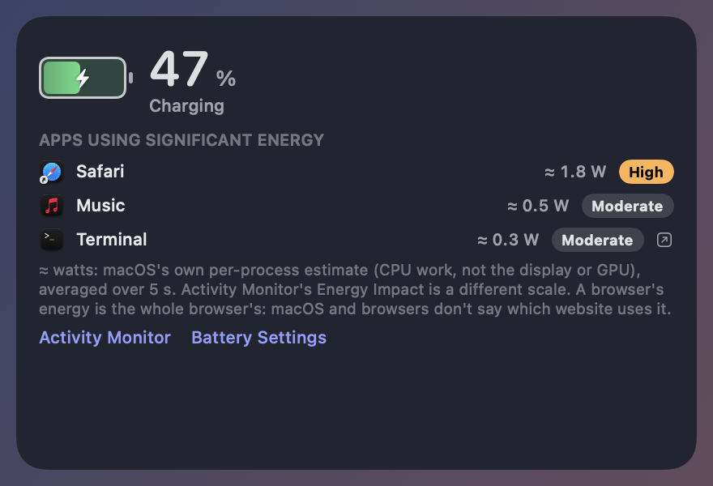
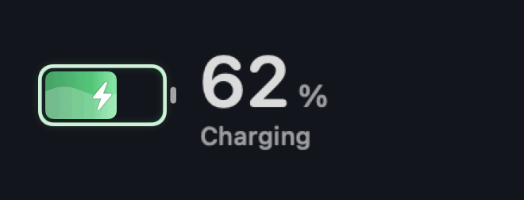
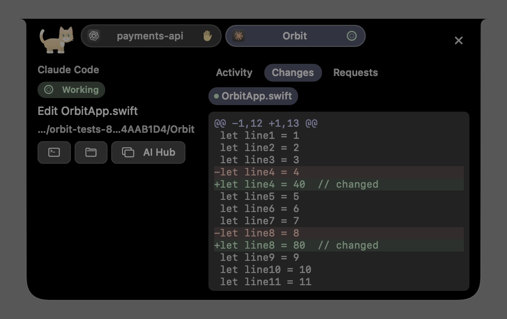
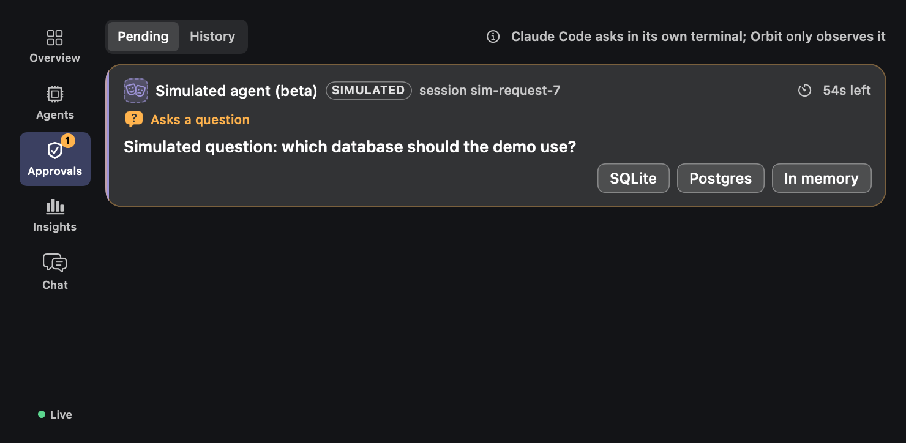

Orbit
Your Mac. Your workspace. One intelligent control center.
A native macOS control center that lives in the notch: AI coding agents, meetings, battery and displays, a launcher and your workspaces, in one place, on your Mac. Built with public macOS APIs and Command Line Tools only; your data stays on your Mac.
View on GitHub Build it
Features
What Orbit does today. Hover the notch (or press ⌃⌥⌘O) for the dashboard; press ⌃⌥Space for the launcher. Full feature list with status.
Universal Launcher
Apps, files, projects, agent sessions, tasks, events, Settings and Orbit actions, keyboard first.
Workspace Profiles
Projects, apps, layouts and focus choices per context. Never opens or closes anything by itself.
Context Engine
Ranked suggestions with the reason each appeared; learns locally from your clicks only.
AI Hub
Observe-only monitoring of coding agents: sessions, diffs, insights, alerts.
Meetings
Reminders in the notch or a floating pill, with Join for Meet, Zoom and Teams links.
Battery and energy
Charge states, per-app energy estimates and a charging animation that runs only while charging.
System
Wi-Fi, Bluetooth, sound, power, Keep Awake, and the built-in display's brightness.
Productivity
Tasks, goals, focus timer, clipboard, quick note, File Shelf, Screenshot Vault, Daily Digest.
Desktop pet
A cat or a dog from free CC0 artwork, and a companion in the notch.




What Orbit can't do
- Set brightness, or read an external monitor's brightness: both need private interfaces.
- Tell which website uses energy: browsers don't expose it, so a browser is shown as a whole.
- Answer Claude Code's prompts: the integration is observe-only by design.
- The GitHub and AI Hub chat widgets show sample data and are labelled so.
Architecture
An accessory app (no Dock icon). AppKit owns the windows, SwiftUI draws their content, Core Animation runs continuous effects outside Orbit's process. Architecture guide.
One notch slot
The music island, HUDs, alerts, reminders and companion share one place with one priority order.
Widgets
Every card is a DashboardWidget that does no work while hidden.
Agent bridge
Agent hooks send events over a local Unix socket; they're validated, redacted and stored in SQLite.
Context Engine
Reads existing models through Observation; refreshes on change, never polls.
Installation
macOS 26 or later, Apple Silicon, Xcode Command Line Tools with Swift 6.2+. Full Xcode isn't needed.
git clone https://github.com/Awaneesh03/Orbit.git
cd Orbit
scripts/run.sh # build, assemble Orbit.app, sign it ad hoc, launch
scripts/run.sh release # optimised build
scripts/test.sh # run the test suiteAlways launch with scripts/run.sh. Installation guide, including the optional Brave helper.
Configuration
Right-click the notch for Settings, or search for a setting in the launcher. The sidebar is searchable.
| Settings section | What it covers |
|---|---|
| Get Started | Ways in, shortcuts, and every permission with when it's asked |
| General | Notch behaviour, music island, HUDs, compact style, meeting reminders, battery and brightness, automations |
| Launcher · Workspaces | Shortcut, file search, history · profiles and their schedules |
| Suggestions · Context Inspector | Categories, frequency, snooze, learning reset · what the engine sees and why |
| Appearance · Pet · Widgets | Opacity, spacing, motion · character and behaviour · Overview and Briefing layout |
| AI Hub · Calendar · Weather | Agents, alerts, hooks · calendars · city and units |
AI Hub
Off by default. Monitors Claude Code, OpenAI Codex, GitHub Copilot CLI, Gemini CLI, OpenCode and others through local hooks or adapters. AI Hub specification.
- D1 Claude Code is observe-only: Orbit never answers its prompts, and its hooks are written only after you approve.
- D2 No network listener or remote control: events arrive over a local Unix socket.
- D3 No stored credentials; local chat talks only to Ollama or LM Studio on localhost.


Privacy
Data stays in ~/Library/Application Support/Orbit/. No analytics, accounts or screen recording. Privacy details.
| Network use | When |
|---|---|
| Open-Meteo | Weather, while the widget shows |
| Public news feeds | Tech News, while the widget shows |
| LinkedIn API | Only with your own developer token |
| localhost | Local models, only if you turn them on |
Permissions are asked only when you use the feature: Calendar, Location (Wi-Fi names, local weather), Bluetooth. Never Accessibility, Input Monitoring or Screen Recording.
Troubleshooting
- TestingMacros plugin not found: run tests with
scripts/test.sh. - A Dock icon, no permission prompts: Orbit was started with
swift run; usescripts/run.sh. - Permissions asked again after a rebuild: expected with ad-hoc signing.
- No wings: they need a notched main display and the Beside the camera style; otherwise the floating pill is used.
Roadmap
In progress
Live checks on more display setups; LinkedIn waits on API access.
Planned
Meeting reminders in the compact pill, dragging shelf files onto agents, more automation triggers.
Exploring
On-device Foundation Models for the Digest, optional notifications, Developer ID signing.